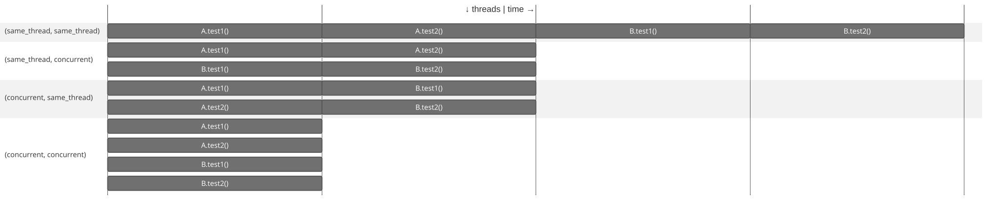

Parallel Execution
By default, JUnit Jupiter tests are run sequentially in a single thread; however, running
tests in parallel — for example, to speed up execution — is available as an opt-in
feature. To enable parallel execution, set the junit.jupiter.execution.parallel.enabled
configuration parameter to true — for example, in junit-platform.properties (see
Configuration Parameters for other options).
Please note that enabling this property is only the first step required to execute tests in parallel. If enabled, test classes and methods will still be executed sequentially by default. Whether or not a node in the test tree is executed concurrently is controlled by its execution mode. The following two modes are available.
SAME_THREAD-
Force execution in the same thread used by the parent. For example, when used on a test method, the test method will be executed in the same thread as any
@BeforeAllor@AfterAllmethods of the containing test class. CONCURRENT-
Execute concurrently unless a resource lock forces execution in the same thread.
By default, nodes in the test tree use the SAME_THREAD execution mode. You can change
the default by setting the junit.jupiter.execution.parallel.mode.default configuration
parameter. Alternatively, you can use the @Execution annotation to change the
execution mode for the annotated element and its subelements (if any) which allows you to
activate parallel execution for individual test classes, one by one.
junit.jupiter.execution.parallel.enabled = true
junit.jupiter.execution.parallel.mode.default = concurrentThe default execution mode is applied to all nodes of the test tree with a few notable
exceptions, namely test classes that use the Lifecycle.PER_CLASS mode or a
MethodOrderer. In the former case, test authors have to ensure that the test class is
thread-safe; in the latter, concurrent execution might conflict with the configured
execution order. Thus, in both cases, test methods in such test classes are only executed
concurrently if the @Execution(CONCURRENT) annotation is present on the test class or
method.
You can use the @Execution annotation to explicitly configure the execution mode for a
test class or method:
@Execution(ExecutionMode.CONCURRENT)
class ExplicitExecutionModeDemo {
@Test
void testA() {
// concurrent
}
@Test
@Execution(ExecutionMode.SAME_THREAD)
void testB() {
// overrides to same_thread
}
}This allows test classes or methods to opt in or out of concurrent execution regardless of the globally configured default.
When parallel execution is enabled and a default ClassOrderer is registered (see
Class Order for details), top-level test classes will
initially be sorted accordingly and scheduled in that order. However, they are not
guaranteed to be started in exactly that order since the threads they are executed on are
not controlled directly by JUnit.
All nodes of the test tree that are configured with the CONCURRENT execution mode will
be executed fully in parallel according to the provided
configuration while observing the
declarative synchronization
mechanism. Please note that Capturing Standard Output/Error needs to be enabled
separately.
In addition, you can configure the default execution mode for top-level classes by setting
the junit.jupiter.execution.parallel.mode.classes.default configuration parameter. By
combining both configuration parameters, you can configure classes to run in parallel but
their methods in the same thread:
junit.jupiter.execution.parallel.enabled = true
junit.jupiter.execution.parallel.mode.default = same_thread
junit.jupiter.execution.parallel.mode.classes.default = concurrentThe opposite combination will run all methods within one class in parallel, but top-level classes will run sequentially:
junit.jupiter.execution.parallel.enabled = true
junit.jupiter.execution.parallel.mode.default = concurrent
junit.jupiter.execution.parallel.mode.classes.default = same_threadThe following diagram illustrates how the execution of two top-level test classes A and
B with two test methods per class behaves for all four combinations of
junit.jupiter.execution.parallel.mode.default and
junit.jupiter.execution.parallel.mode.classes.default (see labels in first column).

If the junit.jupiter.execution.parallel.mode.classes.default configuration parameter is
not explicitly set, the value for junit.jupiter.execution.parallel.mode.default will be
used instead.
Configuration
Executor Service
If parallel execution is enabled, a thread pool is used behind the scenes to execute tests
concurrently. You can configure which implementation of HierarchicalTestExecutorService
is used be setting the junit.jupiter.execution.parallel.config.executor-service
configuration parameter to one of the following options:
fork_join_pool(default)-
Use an executor service that is backed by a
ForkJoinPoolfrom the JDK. This will cause tests to be executed in aForkJoinWorkerThread. In some cases, usages ofForkJoinPoolin test or production code or calls to blocking JDK APIs may cause the number of concurrently executing tests to increase. To avoid this situation, please useworker_thread_pool. worker_thread_pool(experimental)-
Use an executor service that is backed by a regular thread pool and does not create additional threads if test or production code uses
ForkJoinPoolor calls a blocking API in the JDK.
Using worker_thread_pool is currently an experimental feature. You’re invited
to give it a try and provide feedback to the JUnit team so they can improve and eventually
promote this feature.
|
Strategies
Properties such as the desired parallelism and the maximum pool size can be configured
using a ParallelExecutionConfigurationStrategy. The JUnit Platform provides two
implementations out of the box: dynamic and fixed. Alternatively, you may implement a
custom strategy.
To select a strategy, set the junit.jupiter.execution.parallel.config.strategy
configuration parameter to one of the following options.
dynamic-
Computes the desired parallelism based on the number of available processors/cores multiplied by the
junit.jupiter.execution.parallel.config.dynamic.factorconfiguration parameter (defaults to1). The optionaljunit.jupiter.execution.parallel.config.dynamic.max-pool-size-factorconfiguration parameter can be used to limit the maximum number of threads. fixed-
Uses the mandatory
junit.jupiter.execution.parallel.config.fixed.parallelismconfiguration parameter as the desired parallelism. The optionaljunit.jupiter.execution.parallel.config.fixed.max-pool-sizeconfiguration parameter can be used to limit the maximum number of threads. custom-
Allows you to specify a custom
ParallelExecutionConfigurationStrategyimplementation via the mandatoryjunit.jupiter.execution.parallel.config.custom.classconfiguration parameter to determine the desired configuration.
If no configuration strategy is set, JUnit Jupiter uses the dynamic configuration
strategy with a factor of 1. Consequently, the desired parallelism will be equal to the
number of available processors/cores.
|
Parallelism alone does not imply maximum number of concurrent threads
By default, JUnit Jupiter does not guarantee that the number of threads used to
execute test will not exceed the configured parallelism. For example, when using one
of the synchronization mechanisms described in the next section, the executor service
implementation may spawn additional threads to ensure execution continues with sufficient
parallelism. If you require such guarantees, it is possible to limit the maximum number of
threads by configuring the maximum pool size of the dynamic, fixed and custom
strategies.
|
Relevant properties
The following table lists relevant properties for configuring parallel execution. See Configuration Parameters for details on how to set such properties.
General
junit.jupiter.execution.parallel.enabled=true|false-
Enable/disable parallel test execution (defaults to
false). junit.jupiter.execution.parallel.mode.default=concurrent|same_thread-
Default execution mode of nodes in the test tree (defaults to
same_thread). junit.jupiter.execution.parallel.mode.classes.default=concurrent|same_thread-
Default execution mode of top-level classes (defaults to
same_thread). junit.jupiter.execution.parallel.config.executor-service=fork_join_pool|worker_thread_pool-
Type of
HierarchicalTestExecutorServiceto use for parallel execution (defaults tofork_join_pool). junit.jupiter.execution.parallel.config.strategy=dynamic|fixed|custom-
Execution strategy for desired parallelism, maximum pool size, etc. (defaults to
dynamic).
Dynamic strategy
junit.jupiter.execution.parallel.config.dynamic.factor=decimal-
Factor to be multiplied by the number of available processors/cores to determine the desired parallelism for the
dynamic1.0). junit.jupiter.execution.parallel.config.dynamic.max-pool-size-factor=decimal-
Factor to be multiplied by the number of available processors/cores and the value of
junit.jupiter.execution.parallel.config.dynamic.factorto determine the desired parallelism for thedynamic1.0(defaults to 256 plus the value ofjunit.jupiter.execution.parallel.config.dynamic.factormultiplied by the number of available processors/cores) junit.jupiter.execution.parallel.config.dynamic.saturate=true|false-
Enable/disable saturation of the underlying
ForkJoinPoolfor thedynamictrue). Only used ifjunit.jupiter.execution.parallel.config.executor-serviceis set tofork_join_pool.
Fixed strategy
junit.jupiter.execution.parallel.config.fixed.parallelism=integer-
Desired parallelism for the
fixed junit.jupiter.execution.parallel.config.fixed.max-pool-size=integer-
Desired maximum pool size of the underlying fork-join pool for the
fixedjunit.jupiter.execution.parallel.config.fixed.parallelism(defaults to 256 plus the value ofjunit.jupiter.execution.parallel.config.fixed.parallelism). junit.jupiter.execution.parallel.config.fixed.saturate=true|false-
Enable/disable saturation of the underlying
ForkJoinPoolfor thefixedtrue). Only used ifjunit.jupiter.execution.parallel.config.executor-serviceis set tofork_join_pool.
Synchronization
In addition to controlling the execution mode using the @Execution annotation, JUnit
Jupiter provides another annotation-based declarative synchronization mechanism. The
@ResourceLock annotation allows you to declare that a test class or method uses a
specific shared resource that requires synchronized access to ensure reliable test
execution. The shared resource is identified by a unique name which is a String. The
name can be user-defined or one of the predefined constants in Resources:
SYSTEM_PROPERTIES, SYSTEM_OUT, SYSTEM_ERR, LOCALE, or TIME_ZONE.
In addition to declaring these shared resources statically, the @ResourceLock
annotation has a providers attribute that allows registering implementations of the
ResourceLocksProvider interface that can add shared resources dynamically at runtime.
Note that resources declared statically with @ResourceLock annotation are combined with
resources added dynamically by ResourceLocksProvider implementations.
If the tests in the following example were run in parallel without the use of
@ResourceLock, they would be flaky. Sometimes they would pass, and at other times they
would fail due to the inherent race condition of writing and then reading the same JVM
System Property.
When access to shared resources is declared using the @ResourceLock annotation, the
JUnit Jupiter engine uses this information to ensure that no conflicting tests are run in
parallel. This guarantee extends to lifecycle methods of a test class or method. For
example, if a test method is annotated with a @ResourceLock annotation, the "lock" will
be acquired before any @BeforeEach methods are executed and released after all
@AfterEach methods have been executed.
|
Running tests in isolation
If most of your test classes can be run in parallel without any synchronization but you
have some test classes that need to run in isolation, you can mark the latter with the
|
In addition to the String that uniquely identifies the shared resource, you may specify
an access mode. Two tests that require READ access to a shared resource may run in
parallel with each other but not while any other test that requires READ_WRITE access
to the same shared resource is running.
@ResourceLock annotation@Execution(CONCURRENT)
class StaticSharedResourcesDemo {
private Properties backup;
@BeforeEach
void backup() {
backup = new Properties();
backup.putAll(System.getProperties());
}
@AfterEach
void restore() {
System.setProperties(backup);
}
@Test
@ResourceLock(value = SYSTEM_PROPERTIES, mode = READ)
void customPropertyIsNotSetByDefault() {
assertNull(System.getProperty("my.prop"));
}
@Test
@ResourceLock(value = SYSTEM_PROPERTIES, mode = READ_WRITE)
void canSetCustomPropertyToApple() {
System.setProperty("my.prop", "apple");
assertEquals("apple", System.getProperty("my.prop"));
}
@Test
@ResourceLock(value = SYSTEM_PROPERTIES, mode = READ_WRITE)
void canSetCustomPropertyToBanana() {
System.setProperty("my.prop", "banana");
assertEquals("banana", System.getProperty("my.prop"));
}
}ResourceLocksProvider implementation@Execution(CONCURRENT)
@ResourceLock(providers = DynamicSharedResourcesDemo.Provider.class)
class DynamicSharedResourcesDemo {
private Properties backup;
@BeforeEach
void backup() {
backup = new Properties();
backup.putAll(System.getProperties());
}
@AfterEach
void restore() {
System.setProperties(backup);
}
@Test
void customPropertyIsNotSetByDefault() {
assertNull(System.getProperty("my.prop"));
}
@Test
void canSetCustomPropertyToApple() {
System.setProperty("my.prop", "apple");
assertEquals("apple", System.getProperty("my.prop"));
}
@Test
void canSetCustomPropertyToBanana() {
System.setProperty("my.prop", "banana");
assertEquals("banana", System.getProperty("my.prop"));
}
static class Provider implements ResourceLocksProvider {
@Override
public Set<Lock> provideForMethod(List<Class<?>> enclosingInstanceTypes, Class<?> testClass,
Method testMethod) {
ResourceAccessMode mode = testMethod.getName().startsWith("canSet") ? READ_WRITE : READ;
return Set.of(new Lock(SYSTEM_PROPERTIES, mode));
}
}
}Also, "static" shared resources can be declared for direct child nodes via the target
attribute in the @ResourceLock annotation, the attribute accepts a value from
the ResourceLockTarget enum.
Specifying target = CHILDREN in a class-level @ResourceLock annotation
has the same semantics as adding an annotation with the same value and mode
to each test method and nested test class declared in this class.
This may improve parallelization when a test class declares a READ lock,
but only a few methods hold a READ_WRITE lock.
Tests in the following example would run in the SAME_THREAD if the @ResourceLock
didn’t have target = CHILDREN. This is because the test class declares a READ
shared resource, but one test method holds a READ_WRITE lock,
which would force the SAME_THREAD execution mode for all the test methods.
target attribute@Execution(CONCURRENT)
@ResourceLock(value = "a", mode = READ, target = CHILDREN)
public class ChildrenSharedResourcesDemo {
@ResourceLock(value = "a", mode = READ_WRITE)
@Test
void test1() throws InterruptedException {
Thread.sleep(2000L);
}
@Test
void test2() throws InterruptedException {
Thread.sleep(2000L);
}
@Test
void test3() throws InterruptedException {
Thread.sleep(2000L);
}
@Test
void test4() throws InterruptedException {
Thread.sleep(2000L);
}
@Test
void test5() throws InterruptedException {
Thread.sleep(2000L);
}
}